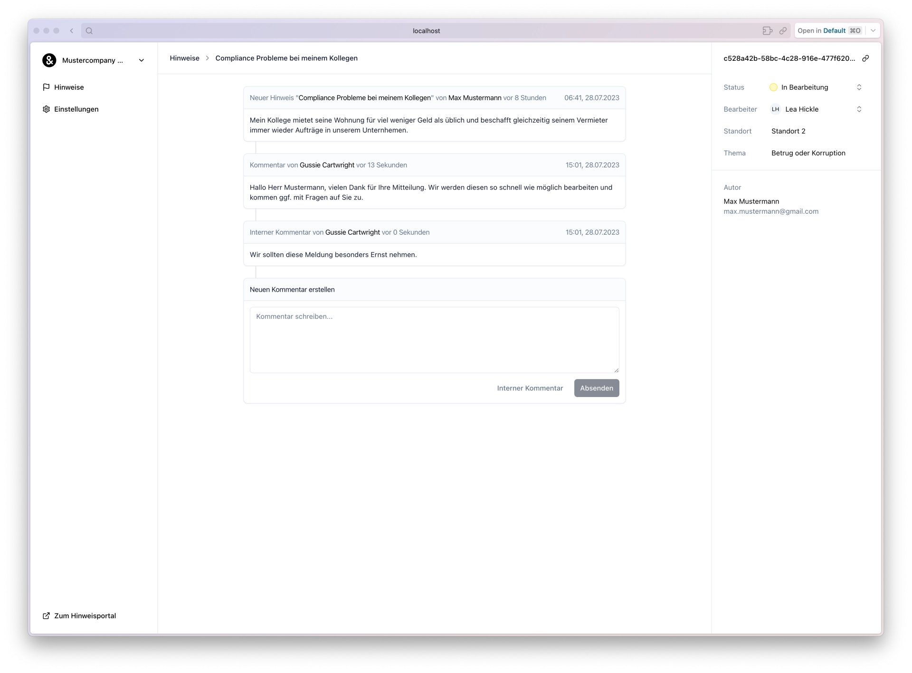

Enhancing Corporate Transparency: Hinweisgeber.in
As a key developer on the Hinweisgeber.in project at Gridventures GmbH, I was tasked with addressing the critical need for an internal reporting system compliant with legal requirements for entities with 50 or more employees. My responsibilities encompassed the full spectrum of development tasks, from conceptualizing the user interface with React and Shadcn UI to engineering a dependable backend using Node.js and Postgres.
This project was not only a technical challenge but also a meaningful opportunity to contribute to a platform that promotes integrity and accountability within organizations. My involvement ranged from coding and testing to deploying the system, ensuring a user-friendly experience while maintaining the highest standards of security and privacy for sensitive reports.